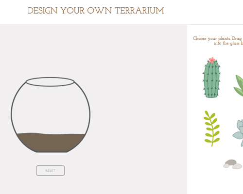
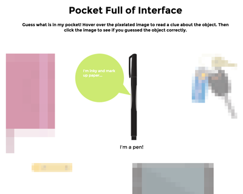
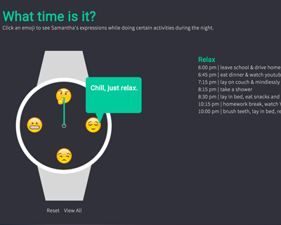
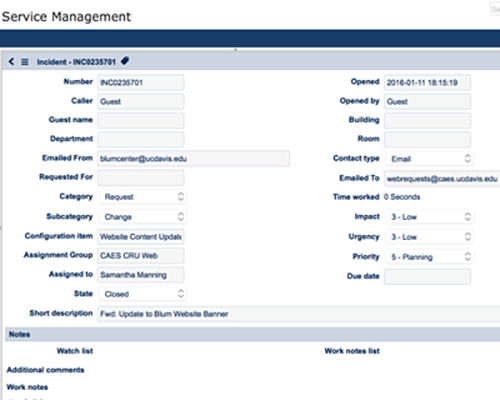
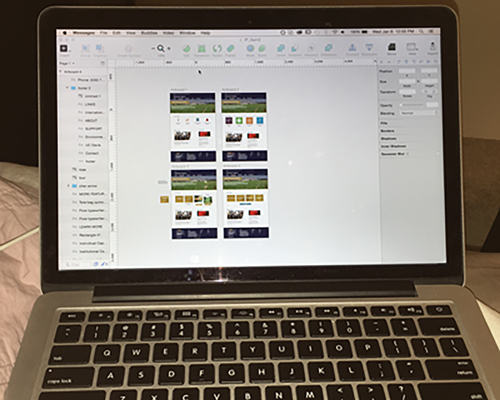

filler
Exercise 5 jQuery UI Library
February 11, 2016
I decided to use the jQuery UI library because of its drag and drop capabilities. For my final project, I'm interested in creating an interactive game to teach how to correctly sort waste. I thought the drag and drop interactions from jQuery UI would be perfect to include in my game.
Therefore, in my exercise 5 I experimented with using "draggable" and "droppable" with jQuery UI. I created a simple app about creating your own terrarium. Users drag and drop plants or rocks into the glass bowl full of soil. They can arrange the plants inside the bowl any way they like. When users drop an object into the bowl, they will hear a dropping sound. They can clear the plants from the bowl by clicking the reset button, which will relocate the objects back to the sidebar.
jQuery UI library has a large variety of UI interactions and widgets that are very useful for almost any type of website, can simplify your code, and add a lot of flexibility to your designs. The library is fairly easy to use since it is well documented and seemed to be used widely (I found a lot of people posting questions about the library in online forums). Visit jQuery UI to see demos and learn more about this wonderful library!

Exercise 4 Interface Design
February 4, 2016
One day in class we were talking about pixelation and to avoid pixelated images by saving them as PNGs with the “save for web option”. This has become second nature to me because I always have to save images this way in Photoshop when I maintain websites at work. Therefore I got the idea to design an interface that features pixelated images of the 5 objects I carry around with my most. I wanted to create a virtual feel to my objects, so I made vectors that look flat and and applied a pixelation effect to them in Photoshop. My interface has 5 pixelated images to intentionally distort and make it difficult to visually recognize the objects. When users hover over each pixelated image, a tool tip will display a hint about the object. Then users can click the image to see a clear image of the object and a label that displays the object’s name.
Since I wanted to emphasize a “virtual feel”, I kept the animations fairly simple and only focused on using a couple animations. I used animation to change the opacity and source of the image. I chose not to use any slide or fade effects because I wanted the interface to be simple and not too busy with excess animations. Here are the 3 elements in my design that support an effective and interesting interface:
- Hover effects give more detailed info to users
- Opacity and images change when users click
- Text appears when users click

Exercise 3 Interface Design
January 28, 2016
I think my design for exercise 3 is an engaging visual solution because I used a bold graphic. I wanted to create something that looked fun and playful. Also I wanted to make something that has not already been done (as we saw examples from previous students). Therefore, I think my design became more visually engaging by basing it around the watch image. The image is large, pops out from the gray background, and features fun emojis that are popular amongst many.
My design also features events that enable certain effects when users interact with my design. For example, I used many hover functions in my code to change the color of text when users hover over an element. I did this because I wanted users to visually see and know when an element is a link they can click. Another way I used hover was to show tool tips, that give users more information when they hover over the emoji faces. I did this to also let the users know what they are looking at and to entice them to click on the element. The tool tips are also a fun element that adds to the playfulness of an engaging interface. Although my design is fairly simple and minimalistic at first glance, I think it becomes a visually engaging and interactive solution due to its graphic elements and hover functions. Get a glimpse of my interface from the screenshot below...

"Service Now" Interface
January 19, 2016
A web based form that I use often is “Service Now”. I use this when I work in the Computer Resource Unit for the College of Agricultural & Environmental Science Dean’s Office. Service Now is platform that provides service management software. We use this software to mainly communicate and answer clients' questions.
After viewing Bill Derouchey’s slideshow on interface design, I noticed that the Service Now form could be improved in many ways. One of the first points Derouchey states is that "we make things for people to use”. I found this statement ironic when I thought of Service Now because it is not very people friendly. Whoever designed the interface paid very little attention to detail and thought more about function than practicality. In this case, I think practicality is extremely important since a lot of different people with different skill levels are using this interface. The interface should be accessible to all the people who use it.
Derouchey states the importance of priority, clarity, and purpose in interface design. This form lacks priority, clarity, and purpose. There are numerous form fields that are not required to fill out and are irrelevant. These irrelevant form fields take up valuable space that could be inhabited by something with more importance. Also, this interface has very minimal color and icons. The form fields and labels all look the same, which makes it hard to navigate through the form. It looks very basic, but not in a good way. I think color and a different layout could greatly enhance the usability of this form. If priority, clarity, and purpose were emphasized more in the form design, this would be a very effective interface design.

Effective interface design?
January 7, 2016
There are so many interfaces around us today, it is hard to pick just one that I use often. However one that stands out to me is the Sketch app interface on my Macbook. This interface has allowed me to create website mockups, banners, buttons, and even edit photos pain free. Now all the functions I listed may just sound like things you can do on Photoshop, but Sketch is more than that. Even though I have used Photoshop a lot and it has a lot of powerful tools, I've grown to prefer sketch because of its friendlier usability. Its interface is organized differently than Photoshop. There are not as many drop own menus or tightly spaced icons for tools. It has more convenient options to add or edit shapes and artboards. It also is easier to access layers and isolate objects within a layer. I find myself being able to create mockups much faster and without getting frustrated from the interface. This may seem miniscule...but all of these little short cuts add up and become life savers when working on projects under short deadlines.
In all, I admire the Sketch interface because it's easy to use, has a clear organized layout, and helps me produce mockups faster and more efficiently. This interface helps me process and produce things very fast and I enjoy that sense of instant gratification. I think that's one important element about an effective interface is that whatever the interface it is, it generally makes the user feel good or leaves the user with a good impression.
